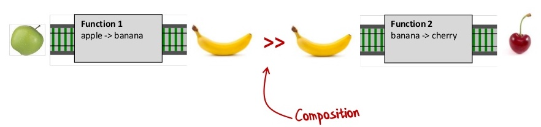
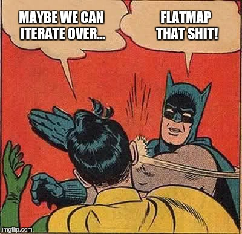

type FeatureValueId = int
Full name: index.FeatureValueId
Full name: index.FeatureValueId
Multiple items
val int : value:'T -> int (requires member op_Explicit)
Full name: Microsoft.FSharp.Core.Operators.int
--------------------
type int = int32
Full name: Microsoft.FSharp.Core.int
--------------------
type int<'Measure> = int
Full name: Microsoft.FSharp.Core.int<_>
val int : value:'T -> int (requires member op_Explicit)
Full name: Microsoft.FSharp.Core.Operators.int
--------------------
type int = int32
Full name: Microsoft.FSharp.Core.int
--------------------
type int<'Measure> = int
Full name: Microsoft.FSharp.Core.int<_>
type FeatureValue =
| Discrete of FeatureValueId
| Numeric of decimal
| Literal of string
| Date of DateTime
Full name: index.FeatureValue
| Discrete of FeatureValueId
| Numeric of decimal
| Literal of string
| Date of DateTime
Full name: index.FeatureValue
union case FeatureValue.Discrete: FeatureValueId -> FeatureValue
union case FeatureValue.Numeric: decimal -> FeatureValue
Multiple items
val decimal : value:'T -> decimal (requires member op_Explicit)
Full name: Microsoft.FSharp.Core.Operators.decimal
--------------------
type decimal = System.Decimal
Full name: Microsoft.FSharp.Core.decimal
--------------------
type decimal<'Measure> = decimal
Full name: Microsoft.FSharp.Core.decimal<_>
val decimal : value:'T -> decimal (requires member op_Explicit)
Full name: Microsoft.FSharp.Core.Operators.decimal
--------------------
type decimal = System.Decimal
Full name: Microsoft.FSharp.Core.decimal
--------------------
type decimal<'Measure> = decimal
Full name: Microsoft.FSharp.Core.decimal<_>
Multiple items
union case FeatureValue.Literal: string -> FeatureValue
--------------------
type LiteralAttribute =
inherit Attribute
new : unit -> LiteralAttribute
Full name: Microsoft.FSharp.Core.LiteralAttribute
--------------------
new : unit -> LiteralAttribute
union case FeatureValue.Literal: string -> FeatureValue
--------------------
type LiteralAttribute =
inherit Attribute
new : unit -> LiteralAttribute
Full name: Microsoft.FSharp.Core.LiteralAttribute
--------------------
new : unit -> LiteralAttribute
Multiple items
val string : value:'T -> string
Full name: Microsoft.FSharp.Core.Operators.string
--------------------
type string = System.String
Full name: Microsoft.FSharp.Core.string
val string : value:'T -> string
Full name: Microsoft.FSharp.Core.Operators.string
--------------------
type string = System.String
Full name: Microsoft.FSharp.Core.string
union case FeatureValue.Date: System.DateTime -> FeatureValue
namespace System
Multiple items
type DateTime =
struct
new : ticks:int64 -> DateTime + 10 overloads
member Add : value:TimeSpan -> DateTime
member AddDays : value:float -> DateTime
member AddHours : value:float -> DateTime
member AddMilliseconds : value:float -> DateTime
member AddMinutes : value:float -> DateTime
member AddMonths : months:int -> DateTime
member AddSeconds : value:float -> DateTime
member AddTicks : value:int64 -> DateTime
member AddYears : value:int -> DateTime
...
end
Full name: System.DateTime
--------------------
System.DateTime()
(+0 other overloads)
System.DateTime(ticks: int64) : unit
(+0 other overloads)
System.DateTime(ticks: int64, kind: System.DateTimeKind) : unit
(+0 other overloads)
System.DateTime(year: int, month: int, day: int) : unit
(+0 other overloads)
System.DateTime(year: int, month: int, day: int, calendar: System.Globalization.Calendar) : unit
(+0 other overloads)
System.DateTime(year: int, month: int, day: int, hour: int, minute: int, second: int) : unit
(+0 other overloads)
System.DateTime(year: int, month: int, day: int, hour: int, minute: int, second: int, kind: System.DateTimeKind) : unit
(+0 other overloads)
System.DateTime(year: int, month: int, day: int, hour: int, minute: int, second: int, calendar: System.Globalization.Calendar) : unit
(+0 other overloads)
System.DateTime(year: int, month: int, day: int, hour: int, minute: int, second: int, millisecond: int) : unit
(+0 other overloads)
System.DateTime(year: int, month: int, day: int, hour: int, minute: int, second: int, millisecond: int, kind: System.DateTimeKind) : unit
(+0 other overloads)
type DateTime =
struct
new : ticks:int64 -> DateTime + 10 overloads
member Add : value:TimeSpan -> DateTime
member AddDays : value:float -> DateTime
member AddHours : value:float -> DateTime
member AddMilliseconds : value:float -> DateTime
member AddMinutes : value:float -> DateTime
member AddMonths : months:int -> DateTime
member AddSeconds : value:float -> DateTime
member AddTicks : value:int64 -> DateTime
member AddYears : value:int -> DateTime
...
end
Full name: System.DateTime
--------------------
System.DateTime()
(+0 other overloads)
System.DateTime(ticks: int64) : unit
(+0 other overloads)
System.DateTime(ticks: int64, kind: System.DateTimeKind) : unit
(+0 other overloads)
System.DateTime(year: int, month: int, day: int) : unit
(+0 other overloads)
System.DateTime(year: int, month: int, day: int, calendar: System.Globalization.Calendar) : unit
(+0 other overloads)
System.DateTime(year: int, month: int, day: int, hour: int, minute: int, second: int) : unit
(+0 other overloads)
System.DateTime(year: int, month: int, day: int, hour: int, minute: int, second: int, kind: System.DateTimeKind) : unit
(+0 other overloads)
System.DateTime(year: int, month: int, day: int, hour: int, minute: int, second: int, calendar: System.Globalization.Calendar) : unit
(+0 other overloads)
System.DateTime(year: int, month: int, day: int, hour: int, minute: int, second: int, millisecond: int) : unit
(+0 other overloads)
System.DateTime(year: int, month: int, day: int, hour: int, minute: int, second: int, millisecond: int, kind: System.DateTimeKind) : unit
(+0 other overloads)
val displaySize : FeatureValue
Full name: index.displaySize
Full name: index.displaySize
Scala vs Java and
What the ... FP ?
Scala vs Java
- statically typed
- strong(er) type inference
- Functional + Object oriented
- everything is an object, including functions
- every function is a value - including methods
Scala vs Java
\(e = mc^2\)
\(errors = (more\ code)^2\)
Java
1: 2: |
|
Scala
1: 2: 3: |
|
Object oriented programming

What the ... FP ?
- OOP -- objects everywhere
- FP - functions everywhere
- OOP Design patterns
-
Functional design...
Patterns
Tips
Approaches
OOP Design Patterns
|
|
SOLID principes
|
Functional patterns
Some obligatory basic terms. It's really easy!
- Monoid, Monad, Comonad
- Functor, Bifunctor, Endofunctor
- Apomorphism, Isomorphism, Sigomorphism

Actually not needed, relax!
Functional patterns
-
Core principles:
- functions are things
- composition everywhere
- types are not classes
-
Functions as parameters
- interface -> function
- dependency injection -> partial application
- chaining, continuation
Function is a thing
- not attached to a class
-
always one input, always one output
apple => banana(apple,banana) => ftuitSaladapple => banana => fruitSaladdef mkSalad(apple)(banana): fruitSalad
Function is a thing
partial application
1: 2: 3: |
|
functional dependency injection
1: 2: 3: 4: 5: |
|
Function composition
1: 2: |
|

Function composition
OOP
- objects in the large
- functions in the small
FP
- functions in the large
- functions in the small
Scala
- what ever you need
Function composition
1: 2: 3: 4: 5: 6: |
|
service is just like a microservice but without "micro"
Types are not classes
-
Data (List->List)
- set of valid inputs
- set of valid outputs
-
Behavior (map, collect, filter, etc...)
- not methods - functions
-
Composition
- AND - Product types -
case class - OR - Algebraic Data Types (ADT)
- AND - Product types -
Product types - case class
AND-composition
1: 2: 3: 4: 5: 6: |
|
ADT - algebraic data types
OR-composition
1: 2: 3: 4: 5: 6: 7: 8: |
|
val displaySize = FeatureValue.Numeric(7.0) // Numeric
the same in F#
1: 2: 3: 4: 5: 6: 7: |
|
ADT - algebraic data types
- Simple representation for complex cases
- Make invalid state impossible
- Each case is independent in scala
-
Pattern matching ensures all* cases handled
- (actually in scala not all)
sealed traitandfinal case class
Scala tips and pitfalls
Things to avoid if not necessary. What to use instead
-
var==>val- prefer immutable
- but mutable if performance critical
defwithout parameters is also a function-
foreach==>map,flatMap,filter,fold- scala's
foris just syntactic shugar forflatMap
- scala's
if .. else==> pattern matching-
Inheritance
- ADTs
- Composition over inheritance
- CakePattern wit
traits - popular in scala
Scala tips and pitfalls
Option: Some(value) or None
Optionis newnull- gives a meaning to
null, not eliminates it - ADT - must be handled on the place
-
can cause NRE if comes from java
new Option(javaObject)
- slight performance drawback - heap instead of stack
-
not overuse it, not propagate if not necessary
flatMapit away early orgetOrElse- don't use
get- runtime exception!
Scala tips and pitfalls
1: 2: 3: |
|
the same with for:
1: 2: 3: 4: 5: 6: |
|
Scala tips and pitfalls
import scala.util.{Try, Success, Failure}
- Avoid throwing exceptions
Tryto catch them- Better alternative to exceptions
- is also an ADT
- ROP - Railway oriented programming
- Happy way programming with flatmap
Scala tips and pitfalls
1: 2: 3: 4: 5: 6: 7: |
|

IntelliJ Tipps
- Ctrl+Shfit+A - search for commands
- Ctl+Q - Quick documentation. Shows which type infers scala if not explicit
- Ctl+Shift+P - Implicit parameters
- Scala Worksheet - REPL with interactive mode
The Reality of a Developer's Life
When I show my boss that I've fixed a bug:

When your regular expression returns what you expect: